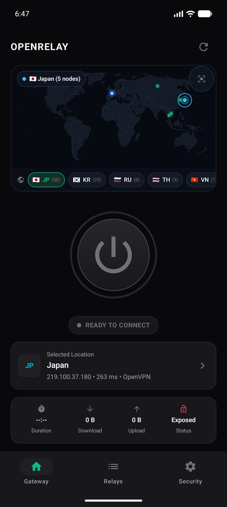

OpenRelay connects directly to the University of Tsukuba public relay network and Cloudflare WARP anycast routing. No commercial tracking, no required accounts, and completely free under GPLv2.

Single unified release v1.0.3 for all operating systems. Standalone, signed, and self-contained.
Full GUI client with real-time public egress IP checker, Tsukuba relay list, and battery-saving WireGuard tunnel.
Download Universal APK Play Store Bundle (.aab) & ARM64 APKNative desktop client with system tray integration and Windows Filtering Platform (WFP) killswitch.
Windows Installer (.msi) Standalone Executable (.exe) & CLI .zipTauri desktop app and background daemon supervisor with nftables/iptables killswitch support.
Download AppImage / .deb x86_64 & ARM64 TarballsHigh-speed terminal client with interactive survey prompt, ping sorting, and headless daemon control.
go install or curl Precompiled Darwin Universal BinaryA zero-compromise client engineered without proprietary bloatware.
Pulls fresh relay mirrors directly from the University of Tsukuba VPNGate project with automatic CSV parsing, latency metrics, and failover.
Switch to WireGuard-based Cloudflare WARP with a single click. Leverages Anycast edge routing for minimal latency and high-throughput connections.
Blocks unencrypted packet leaks if the VPN connection drops unexpectedly. Implemented using Linux nftables/iptables, Windows WFP, and macOS pf.
No user analytics, no Firebase SDKs, no behavioral tracking, and no credentials stored remotely. Your connection state remains strictly local.
Live verification of detected public egress IP, geographical origin, and throughput monitoring directly on the client dashboard.
Includes a resilient background supervisor communicating over Unix domain sockets on Linux/macOS and Named Pipes on Windows.